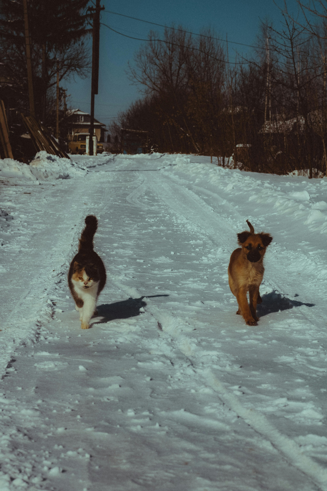
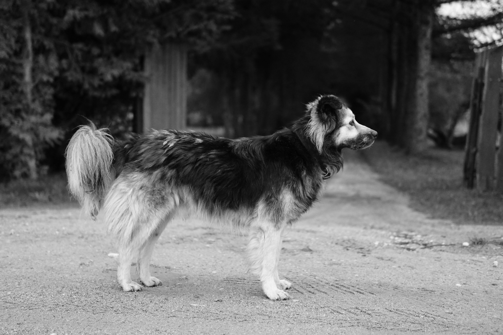

Blog do Amigo

Bolinhos Papo de Amigo: "Meu Pet e o Dia do Amigo"
No "Bolinhos Papo de Amigo", exploramos a importância do Dia do Amigo para nossos pets. Assim como nós, os animais também valorizam a amizade e o companheirismo. Este dia especial é uma oportunidade para fortalecer os laços entre você e seu pet, proporcionando momentos de diversão, carinho e cuidado. Seja através de brincadeiras, passeios ou simplesmente passando tempo juntos, celebrar a amizade com seu animal de estimação é uma forma maravilhosa de demonstrar amor e gratidão por sua presença constante em nossas vidas.
Ver mais ➞
Como se Preparar de Golpes no Mercado Pet
No mercado pet, é essencial estar atento para evitar golpes que podem prejudicar tanto você quanto seu animal de estimação. Para se proteger, sempre pesquise sobre a reputação do vendedor ou loja antes de fazer uma compra. Verifique avaliações e comentários de outros clientes, e desconfie de ofertas que parecem boas demais para ser verdade. Prefira comprar em estabelecimentos
Ver mais ➞
Resenha do Livro: "Penta - Uma Jornada do Amor"
"Penta - Uma Jornada do Amor" é um livro emocionante que narra a história de um cão chamado Penta e sua jornada de superação e amor. Através das páginas, somos levados a vivenciar as aventuras e desafios enfrentados por Penta, desde seu resgate até encontrar um lar cheio de carinho. A narrativa é repleta de lições sobre empatia, resiliência e a importância do vínculo entre humanos e animais. Este livro é uma leitura inspiradora para todos os amantes de pets, destacando o poder transformador do amor e da compaixão.
Ver mais ➞